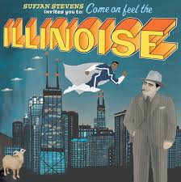

dumb dumb ~ mazie 2:05
 Unsweetened Lemonade Amélie Farren 2:24
Unsweetened Lemonade Amélie Farren 2:24
 Chicago Sufjan Stevens 6:04
 Rocks in God's Shoe Sushi Soucy 2:44
Rocks in God's Shoe Sushi Soucy 2:44
 Limitations Andre Van Drunen 2:49
Limitations Andre Van Drunen 2:49


 Run Bruno Coulais 2:32
Run Bruno Coulais 2:32
 Caught in a Weird Loop Amie Doherty 1:25
Caught in a Weird Loop Amie Doherty 1:25
 If This Is It Huey Lewis & the News 3:53
If This Is It Huey Lewis & the News 3:53
.png) Les Fleurs Minnie Ripperton 3:19
Les Fleurs Minnie Ripperton 3:19
 Fortune Teller Lu Lagoon 4:00
Fortune Teller Lu Lagoon 4:00